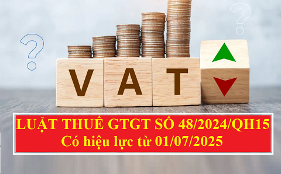

Luật thuế GTGT số 48/2024/QH15 ban hành ngày 26/11/2024 có hiệu lực từ ngày 01/07/2025 mới nhất hiện nay.
LUẬT THUẾ GIÁ TRỊ GIA TĂNG Quốc hội ban hành Luật Thuế giá trị gia tăng.
Chương I
Điều 1. Phạm vi điều chỉnhNHỮNG QUY ĐỊNH CHUNG Luật này quy định về đối tượng chịu thuế, đối tượng không chịu thuế, người nộp thuế, căn cứ và phương pháp tính thuế, khấu trừ và hoàn thuế giá trị gia tăng. Điều 2. Thuế giá trị gia tăng Thuế giá trị gia tăng là thuế tính trên giá trị tăng thêm của hàng hóa, dịch vụ phát sinh trong quá trình từ sản xuất, lưu thông đến tiêu dùng. Điều 3. Đối tượng chịu thuế Hàng hóa, dịch vụ sử dụng cho sản xuất, kinh doanh và tiêu dùng ở Việt Nam là đối tượng chịu thuế giá trị gia tăng, trừ các đối tượng quy định tại Điều 5 của Luật này. Điều 4. Người nộp thuế 1. Tổ chức, hộ, cá nhân sản xuất, kinh doanh hàng hóa, dịch vụ chịu thuế giá trị gia tăng (sau đây gọi là cơ sở kinh doanh). 2. Tổ chức, cá nhân nhập khẩu hàng hóa chịu thuế giá trị gia tăng (sau đây gọi là người nhập khẩu). 3. Tổ chức, cá nhân sản xuất, kinh doanh tại Việt Nam mua dịch vụ (kể cả trường hợp mua dịch vụ gắn với hàng hóa) của tổ chức nước ngoài không có cơ sở thường trú tại Việt Nam, cá nhân ở nước ngoài là đối tượng không cư trú tại Việt Nam, trừ trường hợp quy định tại khoản 4 và khoản 5 Điều này; tổ chức sản xuất, kinh doanh tại Việt Nam mua hàng hóa, dịch vụ để tiến hành hoạt động tìm kiếm thăm dò, phát triển mỏ dầu khí và khai thác dầu khí của tổ chức nước ngoài không có cơ sở thường trú tại Việt Nam, cá nhân ở nước ngoài là đối tượng không cư trú tại Việt Nam. 4. Nhà cung cấp nước ngoài không có cơ sở thường trú tại Việt Nam có hoạt động kinh doanh thương mại điện tử, kinh doanh dựa trên nền tảng số với tổ chức, cá nhân tại Việt Nam (sau đây gọi là nhà cung cấp nước ngoài); tổ chức là nhà quản lý nền tảng số nước ngoài thực hiện khấu trừ, nộp thay nghĩa vụ thuế phải nộp của nhà cung cấp nước ngoài; tổ chức kinh doanh tại Việt Nam áp dụng phương pháp tính thuế giá trị gia tăng là phương pháp khấu trừ thuế mua dịch vụ của nhà cung cấp nước ngoài không có cơ sở thường trú tại Việt Nam thông qua kênh thương mại điện tử hoặc các nền tảng số thực hiện khấu trừ, nộp thay nghĩa vụ thuế phải nộp của nhà cung cấp nước ngoài. 5. Tổ chức là nhà quản lý sàn giao dịch thương mại điện tử, nhà quản lý nền tảng số có chức năng thanh toán thực hiện khấu trừ, nộp thuế thay, kê khai số thuế đã khấu trừ cho hộ kinh doanh, cá nhân kinh doanh trên sàn thương mại điện tử, nền tảng số. 6. Chính phủ quy định chi tiết các khoản 1, 4 và 5 Điều này; quy định về người nộp thuế trong trường hợp nhà cung cấp nước ngoài cung cấp dịch vụ cho người mua là tổ chức kinh doanh tại Việt Nam áp dụng phương pháp khấu trừ thuế quy định tại khoản 4 Điều này. Điều 5. Đối tượng không chịu thuế 1. Sản phẩm cây trồng, rừng trồng, chăn nuôi, thủy sản nuôi trồng, đánh bắt chưa chế biến thành các sản phẩm khác hoặc chỉ qua sơ chế thông thường của tổ chức, cá nhân tự sản xuất, đánh bắt bán ra và ở khâu nhập khẩu. 2. Sản phẩm giống vật nuôi theo quy định của pháp luật về chăn nuôi, vật liệu nhân giống cây trồng theo quy định của pháp luật về trồng trọt. 3. Thức ăn chăn nuôi theo quy định của pháp luật về chăn nuôi; thức ăn thủy sản theo quy định của pháp luật về thủy sản. 4. Sản phẩm muối được sản xuất từ nước biển, muối mỏ tự nhiên, muối tinh, muối i-ốt mà thành phần chính là Na-tri-clo-rua (NaCl). 5. Nhà ở thuộc tài sản công do Nhà nước bán cho người đang thuê. 6. Tưới, tiêu nước; cày, bừa đất; nạo vét kênh, mương nội đồng phục vụ sản xuất nông nghiệp; dịch vụ thu hoạch sản phẩm nông nghiệp. 7. Chuyển quyền sử dụng đất. 8. Bảo hiểm nhân thọ, bảo hiểm sức khỏe, bảo hiểm người học, các dịch vụ bảo hiểm khác liên quan đến con người; bảo hiểm vật nuôi, bảo hiểm cây trồng, các dịch vụ bảo hiểm nông nghiệp khác; bảo hiểm tàu, thuyền, trang thiết bị và các dụng cụ cần thiết khác phục vụ trực tiếp đánh bắt thủy sản; tái bảo hiểm; bảo hiểm các công trình, thiết bị dầu khí, tàu chứa dầu mang quốc tịch nước ngoài do nhà thầu dầu khí hoặc nhà thầu phụ nước ngoài thuê để hoạt động tại vùng biển Việt Nam, vùng biển chồng lấn mà Việt Nam và các quốc gia có bờ biển tiếp liền hay đối diện đã thỏa thuận đặt dưới chế độ khai thác chung. 9. Các dịch vụ tài chính, ngân hàng, kinh doanh chứng khoán, thương mại sau đây: a) Dịch vụ cấp tín dụng theo quy định của pháp luật về các tổ chức tín dụng và các khoản phí được nêu cụ thể tại Hợp đồng vay vốn của Chính phủ Việt Nam với Bên cho vay nước ngoài; b) Dịch vụ cho vay của người nộp thuế không phải là tổ chức tín dụng; c) Kinh doanh chứng khoán bao gồm môi giới chứng khoán, tự doanh chứng khoán, bảo lãnh phát hành chứng khoán, tư vấn đầu tư chứng khoán, quản lý quỹ đầu tư chứng khoán, quản lý danh mục đầu tư chứng khoán theo quy định của pháp luật về chứng khoán; d) Chuyển nhượng vốn bao gồm chuyển nhượng một phần hoặc toàn bộ số vốn đã đầu tư vào tổ chức kinh tế khác (không phân biệt có thành lập hay không thành lập pháp nhân mới), chuyển nhượng chứng khoán, chuyển nhượng quyền góp vốn và các hình thức chuyển nhượng vốn khác theo quy định của pháp luật, kể cả trường hợp bán doanh nghiệp cho doanh nghiệp khác để sản xuất, kinh doanh và doanh nghiệp mua kế thừa toàn bộ quyền và nghĩa vụ của doanh nghiệp bán theo quy định của pháp luật. Chuyển nhượng vốn quy định tại điểm này không bao gồm chuyển nhượng dự án đầu tư, bán tài sản; đ) Bán nợ bao gồm bán khoản phải trả và khoản phải thu; e) Kinh doanh ngoại tệ; g) Sản phẩm phái sinh theo quy định của pháp luật về các tổ chức tín dụng, pháp luật về chứng khoán và pháp luật về thương mại, bao gồm: hoán đổi lãi suất; hợp đồng kỳ hạn; hợp đồng tương lai; hợp đồng quyền chọn mua, chọn bán và sản phẩm phái sinh khác; h) Bán tài sản bảo đảm của khoản nợ của tổ chức mà Nhà nước sở hữu 100% vốn điều lệ do Chính phủ thành lập có chức năng mua, bán nợ để xử lý nợ xấu của các tổ chức tín dụng Việt Nam. 10. Các dịch vụ y tế, dịch vụ thú y sau đây: a) Dịch vụ y tế bao gồm: dịch vụ khám bệnh, chữa bệnh, phòng bệnh cho người, dịch vụ sinh đẻ có kế hoạch, dịch vụ điều dưỡng sức khoẻ, phục hồi chức năng cho người bệnh; dịch vụ chăm sóc người cao tuổi, người khuyết tật; vận chuyển người bệnh, dịch vụ cho thuê phòng bệnh, giường bệnh của các cơ sở y tế; xét nghiệm, chiếu, chụp; máu và chế phẩm máu dùng cho người bệnh. Dịch vụ chăm sóc người cao tuổi, người khuyết tật bao gồm cả chăm sóc về y tế, dinh dưỡng và tổ chức các hoạt động văn hóa, thể thao, giải trí, vật lý trị liệu, phục hồi chức năng cho người cao tuổi, người khuyết tật. Trường hợp trong gói dịch vụ chữa bệnh theo quy định của Bộ Y tế bao gồm cả sử dụng thuốc chữa bệnh thì khoản thu từ tiền thuốc chữa bệnh nằm trong gói dịch vụ chữa bệnh cũng thuộc đối tượng không chịu thuế giá trị gia tăng; b) Dịch vụ thú y bao gồm: dịch vụ khám bệnh, chữa bệnh, phòng bệnh cho vật nuôi. 11. Dịch vụ tang lễ. 12. Hoạt động duy tu, sửa chữa, xây dựng bằng nguồn vốn đóng góp của nhân dân, vốn viện trợ nhân đạo (chiếm từ 50% tổng số vốn sử dụng cho công trình trở lên) đối với các di tích lịch sử - văn hóa, danh lam thắng cảnh, các công trình văn hóa, nghệ thuật, công trình phục vụ công cộng, cơ sở hạ tầng và nhà ở cho đối tượng chính sách xã hội. 13. Hoạt động dạy học, dạy nghề theo quy định của pháp luật về giáo dục, giáo dục nghề nghiệp. 14. Phát sóng truyền thanh, truyền hình bằng nguồn vốn ngân sách nhà nước. 15. Xuất bản, nhập khẩu, phát hành báo, tạp chí, bản tin, đặc san, sách chính trị, sách giáo khoa, giáo trình, sách văn bản pháp luật, sách khoa học - kỹ thuật, sách phục vụ thông tin đối ngoại, sách in bằng chữ dân tộc thiểu số và tranh, ảnh, áp phích tuyên truyền cổ động, kể cả dưới dạng băng hoặc đĩa ghi tiếng, ghi hình, dữ liệu điện tử; tiền, in tiền. 16. Vận chuyển hành khách công cộng bằng xe buýt, tàu điện, phương tiện thủy nội địa. 17. Máy móc, thiết bị, phụ tùng, vật tư thuộc loại trong nước chưa sản xuất được cần nhập khẩu để sử dụng trực tiếp cho hoạt động nghiên cứu khoa học, phát triển công nghệ; máy móc, thiết bị, phụ tùng thay thế, phương tiện vận tải chuyên dùng và vật tư thuộc loại trong nước chưa sản xuất được cần nhập khẩu để tiến hành hoạt động tìm kiếm thăm dò, phát triển mỏ dầu khí; máy bay, trực thăng, tàu lượn, giàn khoan, tàu thuyền thuộc loại trong nước chưa sản xuất được cần nhập khẩu để tạo tài sản cố định của doanh nghiệp hoặc thuê của nước ngoài để sử dụng cho sản xuất, kinh doanh, cho thuê. 18. Sản phẩm quốc phòng, an ninh theo danh mục do Bộ trưởng Bộ Quốc phòng, Bộ trưởng Bộ Công an ban hành; sản phẩm, dịch vụ nhập khẩu phục vụ công nghiệp quốc phòng, an ninh theo danh mục do Thủ tướng Chính phủ ban hành. 19. Hàng hóa nhập khẩu trong trường hợp viện trợ nhân đạo, viện trợ không hoàn lại. Hàng hóa, dịch vụ bán cho tổ chức, cá nhân nước ngoài, tổ chức quốc tế để viện trợ nhân đạo, viện trợ không hoàn lại cho Việt Nam. 20. Hàng hóa chuyển khẩu, quá cảnh qua lãnh thổ Việt Nam; hàng tạm nhập khẩu, tái xuất khẩu; hàng tạm xuất khẩu, tái nhập khẩu; nguyên liệu nhập khẩu để sản xuất, gia công hàng hóa xuất khẩu theo hợp đồng sản xuất, gia công xuất khẩu ký kết với bên nước ngoài; hàng hóa, dịch vụ được mua bán giữa nước ngoài với các khu phi thuế quan và giữa các khu phi thuế quan với nhau. Hàng hóa nhập khẩu từ nước ngoài của công ty cho thuê tài chính được vận chuyển thẳng vào khu phi thuế quan để cho doanh nghiệp trong khu phi thuế quan thuê tài chính. 21. Chuyển giao công nghệ theo quy định của Luật Chuyển giao công nghệ; chuyển nhượng quyền sở hữu trí tuệ theo quy định của Luật Sở hữu trí tuệ; sản phẩm phần mềm và dịch vụ phần mềm theo quy định của pháp luật. 22. Vàng dạng thỏi, miếng chưa được chế tác thành sản phẩm mỹ nghệ, đồ trang sức hay sản phẩm khác ở khâu nhập khẩu. 23. Sản phẩm xuất khẩu là tài nguyên, khoáng sản khai thác chưa chế biến thành sản phẩm khác và sản phẩm xuất khẩu là tài nguyên, khoáng sản khai thác đã chế biến thành sản phẩm khác theo Danh mục do Chính phủ quy định phù hợp với định hướng của nhà nước về không khuyến khích xuất khẩu, hạn chế xuất khẩu các tài nguyên, khoáng sản thô. 24. Sản phẩm nhân tạo dùng để thay thế cho bộ phận cơ thể của người bệnh, bao gồm cả sản phẩm là bộ phận cấy ghép lâu dài trong cơ thể người; nạng, xe lăn và dụng cụ chuyên dùng khác cho người khuyết tật. 25. Hàng hóa, dịch vụ của hộ, cá nhân sản xuất, kinh doanh có mức doanh thu hằng năm từ 200 triệu đồng trở xuống; tài sản của tổ chức, cá nhân không kinh doanh, không phải là người nộp thuế giá trị gia tăng bán ra; hàng dự trữ quốc gia do cơ quan dự trữ quốc gia bán ra; các khoản thu phí, lệ phí theo quy định của pháp luật về phí và lệ phí. 26. Hàng hóa nhập khẩu trong trường hợp sau đây: a) Quà tặng cho cơ quan nhà nước, tổ chức chính trị, tổ chức chính trị - xã hội, tổ chức chính trị xã hội - nghề nghiệp, tổ chức xã hội, tổ chức xã hội - nghề nghiệp, đơn vị vũ trang nhân dân trong định mức miễn thuế nhập khẩu theo quy định của pháp luật về thuế xuất khẩu, thuế nhập khẩu; b) Quà biếu, quà tặng trong định mức miễn thuế nhập khẩu theo quy định của pháp luật về thuế xuất khẩu, thuế nhập khẩu của tổ chức, cá nhân nước ngoài cho cá nhân Việt Nam; đồ dùng của tổ chức, cá nhân nước ngoài theo tiêu chuẩn miễn trừ ngoại giao và tài sản di chuyển trong định mức miễn thuế nhập khẩu theo quy định của pháp luật về thuế xuất khẩu, thuế nhập khẩu; c) Hàng hoá trong tiêu chuẩn hành lý miễn thuế nhập khẩu theo quy định của pháp luật về thuế xuất khẩu, thuế nhập khẩu; d) Hàng hóa nhập khẩu ủng hộ, tài trợ cho phòng, chống, khắc phục hậu quả thảm họa, thiên tai, dịch bệnh, chiến tranh theo quy định của Chính phủ; đ) Hàng hóa mua bán, trao đổi qua biên giới để phục vụ cho sản xuất, tiêu dùng của cư dân biên giới thuộc Danh mục hàng hóa mua bán, trao đổi của cư dân biên giới theo quy định của pháp luật và trong định mức miễn thuế nhập khẩu theo quy định của pháp luật về thuế xuất khẩu, thuế nhập khẩu; e) Di vật, cổ vật, bảo vật quốc gia theo quy định của pháp luật về di sản văn hóa do cơ quan nhà nước có thẩm quyền nhập khẩu. 27. Cơ sở kinh doanh hàng hóa, dịch vụ không chịu thuế giá trị gia tăng quy định tại Điều này không được khấu trừ, không được hoàn thuế giá trị gia tăng đầu vào, trừ trường hợp được áp dụng mức thuế suất 0% quy định tại khoản 1 Điều 9 của Luật này. 28. Chính phủ quy định chi tiết Điều này. Bộ trưởng Bộ Tài chính quy định hồ sơ, thủ tục xác định đối tượng không chịu thuế giá trị gia tăng quy định tại Điều này.
Chương II
Điều 6. Căn cứ tính thuếCĂN CỨ VÀ PHƯƠNG PHÁP TÍNH THUẾ Căn cứ tính thuế giá trị gia tăng là giá tính thuế và thuế suất. Điều 7. Giá tính thuế 1. Giá tính thuế được quy định như sau: ... Điều 16. Hóa đơn, chứng từ 1. Việc mua bán hàng hóa, dịch vụ phải có hóa đơn, chứng từ theo quy định của pháp luật và các quy định sau đây: a) Cơ sở kinh doanh áp dụng phương pháp khấu trừ thuế sử dụng hóa đơn giá trị gia tăng. Trường hợp bán hàng hóa, dịch vụ chịu thuế giá trị gia tăng mà trên hóa đơn giá trị gia tăng không ghi khoản thuế giá trị gia tăng thì thuế giá trị gia tăng đầu ra được xác định bằng giá thanh toán ghi trên hóa đơn nhân với thuế suất thuế giá trị gia tăng, trừ trường hợp quy định tại khoản 2 Điều này; b) Cơ sở kinh doanh áp dụng phương pháp tính trực tiếp sử dụng hóa đơn bán hàng. 2. Đối với các loại tem, vé, thẻ là chứng từ thanh toán in sẵn giá thanh toán thì giá thanh toán tem, vé, thẻ đó đã bao gồm thuế giá trị gia tăng.
Chương IV
Điều 17. Sửa đổi, bổ sung khoản 1 Điều 3 của Luật Thuế thu nhập cá nhân số 04/2007/QH12 đã được sửa đổi, bổ sung một số điều theo Luật số 26/2012/QH13 và Luật số 71/2014/QH13ĐIỀU KHOẢN THI HÀNH “1. Thu nhập từ kinh doanh, bao gồm: a) Thu nhập từ hoạt động sản xuất, kinh doanh hàng hoá, dịch vụ; b) Thu nhập từ hoạt động hành nghề độc lập của cá nhân có giấy phép hoặc chứng chỉ hành nghề theo quy định của pháp luật. Thu nhập từ kinh doanh quy định tại khoản này không bao gồm thu nhập của hộ, cá nhân sản xuất, kinh doanh có doanh thu dưới mức quy định tại khoản 25 Điều 5 của Luật Thuế giá trị gia tăng.” Điều 18. Hiệu lực thi hành 1. Luật này có hiệu lực thi hành từ ngày 01 tháng 7 năm 2025, trừ trường hợp quy định tại khoản 2 Điều này. 2. Quy định về mức doanh thu của hộ, cá nhân sản xuất, kinh doanh thuộc đối tượng không chịu thuế tại khoản 25 Điều 5 của Luật này và Điều 17 của Luật này có hiệu lực thi hành từ ngày 01 tháng 01 năm 2026. 3. Luật Thuế giá trị gia tăng số 13/2008/QH12 đã được sửa đổi, bổ sung một số điều theo Luật số 31/2013/QH13, Luật số 71/2014/QH13 và Luật số 106/2016/QH13 hết hiệu lực kể từ ngày Luật này có hiệu lực thi hành. Luật này được Quốc hội nước Cộng hoà xã hội chủ nghĩa Việt Nam khóa XV, kỳ họp thứ 8 thông qua ngày 26 tháng 11 năm 2024.
|
Bạn muốn xem toàn bội nội dung của Luật thuế GTGT số 48 thì tải về TẠI ĐÂY nhé.
CÁC ĐIỂM MỚI CỦA LUẬT THUẾ GTGT SỐ 48 có thể kể đến như:
- Điều chỉnh đối tượng không chịu thuế GTGT.
- Sửa đổi quy định giá tính thuế đối với hàng hóa nhập khẩu.
- Bổ sung giá tính thuế đối với hàng hóa, dịch vụ dùng để khuyến mại.
- Điều chỉnh thuế suất của một số hàng hóa, dịch vụ.
- Thay đổi điều kiện khấu trừ thuế GTGT đầu vào.
Mua vào hàng hóa, dịch vụ dưới 20 triệu đồng phải có chứng từ thanh toán không dùng tiền mặt:
- Bổ sung thêm trường hợp hoàn thuế
Bạn xem thêm: Hướng dẫn kê khai bổ sung điều chỉnh thuế GTGT
Bạn xem thêm: Hướng dẫn kê khai bổ sung điều chỉnh thuế GTGT
----------------------------------
KẾ TOÁN DIỆU TÂM chúc các bạn nắm vững luật thuế GTGT mới
